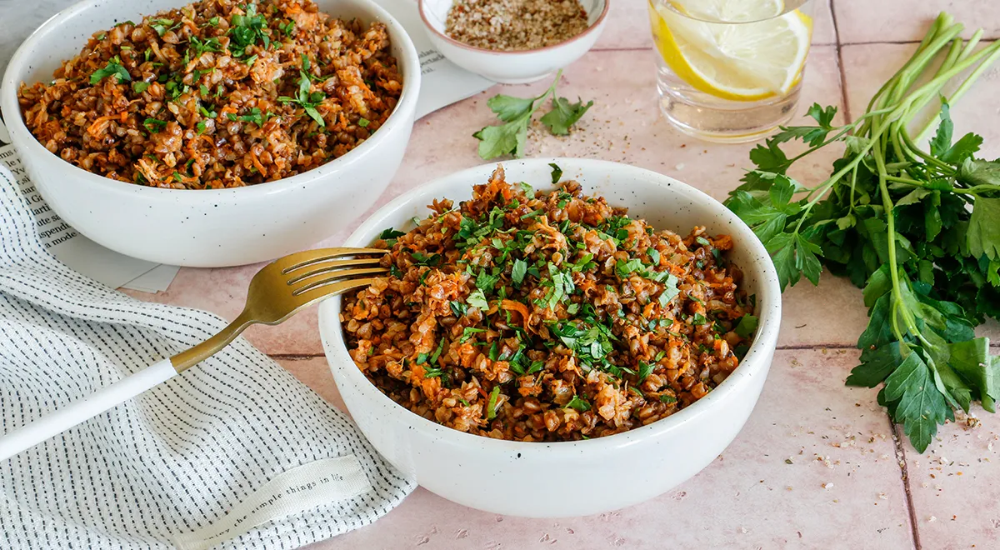

приготовление:
-
Промыть 2 мерные чашки гречки по 100 мл, переложить в кастрюлю и залить 4 такими же чашками кипятка. Посолить, накрыть крышкой и варить на слабом огне 15 минут.
-
Пока варится гречка, разогреть сковороду и выложить 1 банку тушёнки (я предпочитаю брать из индейки). Разделить крупные кусочки лопаткой и слегка обжаривать около 5 минут, чтобы вытопилась часть жира.
-
Добавить 175 г томатного соуса для пасты, перемешать и готовить всё вместе ещё 5 минут.
-
Готовую гречку перемешать с тушёнкой и соусом или подать рядом — как больше нравится.